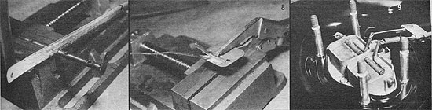

[7] Remove the choke shaft and cut it in half, midway between the two center plate-mounting holes. [8] Cut two pieces of 1/8"" welding rod to 1-7/8"" in length, flatten one end of each, drill a 1/16"" hole through both flat parts, bend each rod to a 90? equilateral, then silver-solder or braze the rods to each choke plate where shown. [9] The independent choke shafts and plates are reassembled within the air horn, and the control cables are fastened as indicated (note the tension spring on the wood-gas choke flap lever, and the homemade clamp that holds the cables tightly to the air cleaner housing.